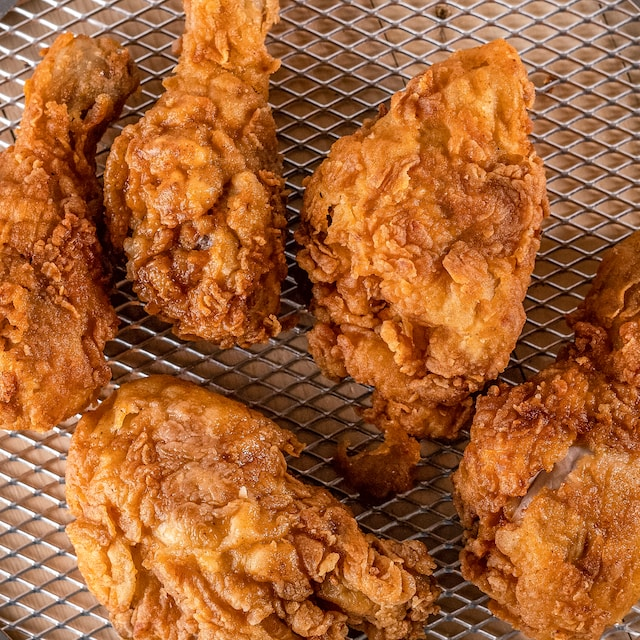

Fried Chicken

Description
The best buttermilk fried chicken recipe delivers tender, juicy meat and a
delightfully crunchy, golden-brown crust for a flavor-packed meal sure to
please everyone at the table.
Ingredients
- 3 cups buttermilk
- 2 tablespoons kosher salt
- 1 tablespoon freshly ground black pepper
- 2 teaspoons cayenne pepper
-
4 pounds chicken parts, including medium chicken wings, thighs, and
drumsticks
- 2 cups all-purpose flour
- 1 teaspoon onion powder
- 1 teaspoon garlic powder
- 1 teaspoon kosher salt
- 1 teaspoon freshly ground black pepper
- 1/2 teaspoon cayenne pepper
- Vegetable oil, for frying
Steps
-
Make the buttermilk soak: In a large bowl, combine the buttermilk with
the salt, black pepper, and cayenne.
-
Add the chicken and stir to coat. Let stand at room temperature for 2
hours or refrigerate for 4 hours.
-
In a large, resealable plastic bag, mix the flour with the onion powder,
garlic powder, salt, black pepper, and cayenne; shake to combine.
-
Set a rack on a baking sheet. Working with one piece at a time, remove
the chicken from the buttermilk soak, letting the excess drip back into
the bowl. Dredge the chicken in the flour mixture, pressing so it
adheres all over. Transfer the coated chicken to the rack and let stand
for 30 minutes.
-
In a deep skillet, heat 1 inch of the oil to 350°F. Set another rack
over a baking sheet lined with paper towels. Fry the chicken in batches,
maintaining the oil temperature at 315°F; turn once, until golden and an
instant-read thermometer inserted in the thickest part of each piece
registers 160°F, 15 to 18 minutes.
- Transfer the chicken to the rack and let stand for 5 minutes.
- Enjoy warm or at room temperature.